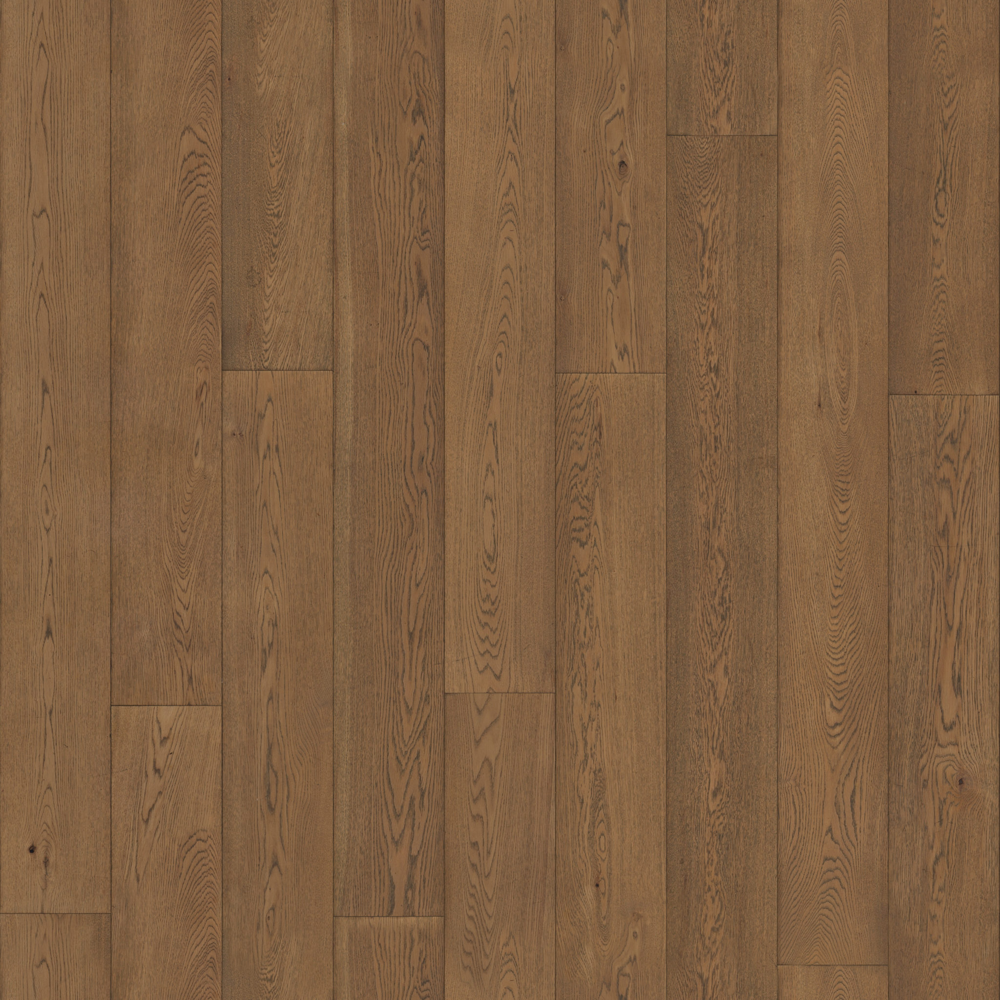
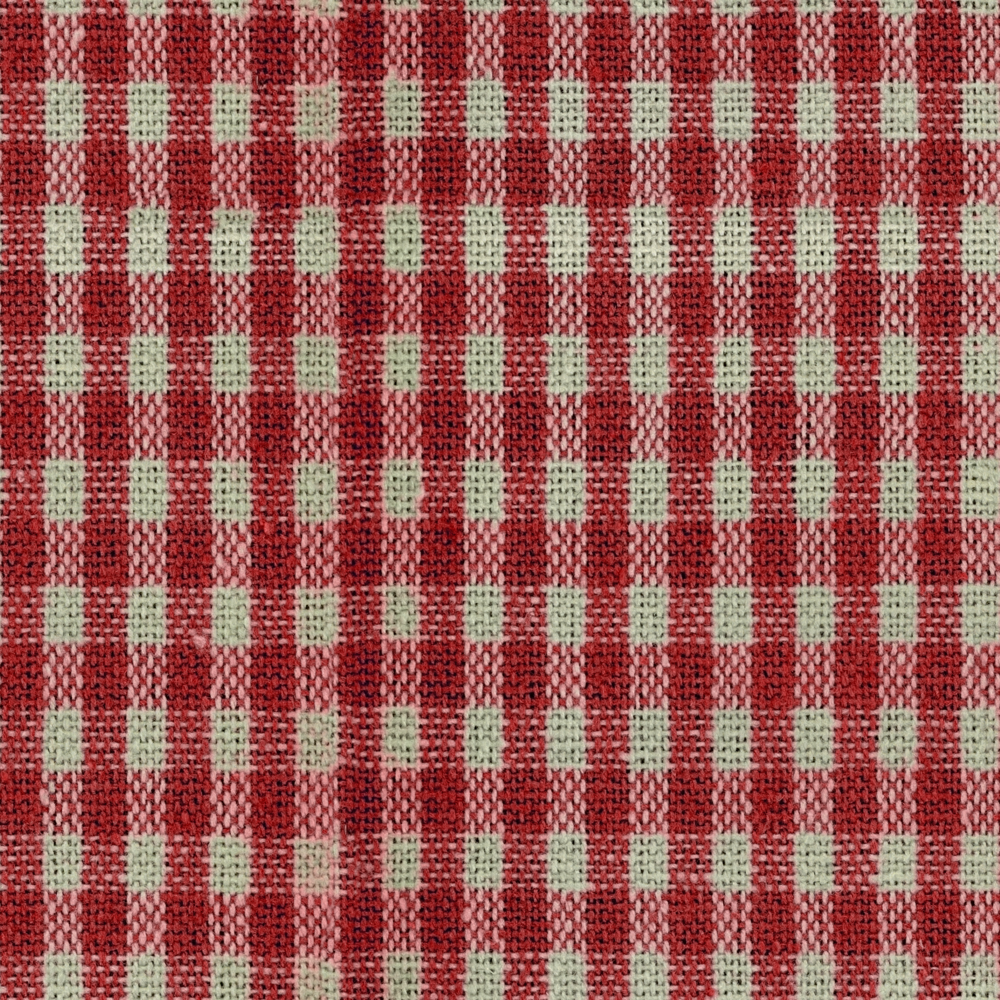
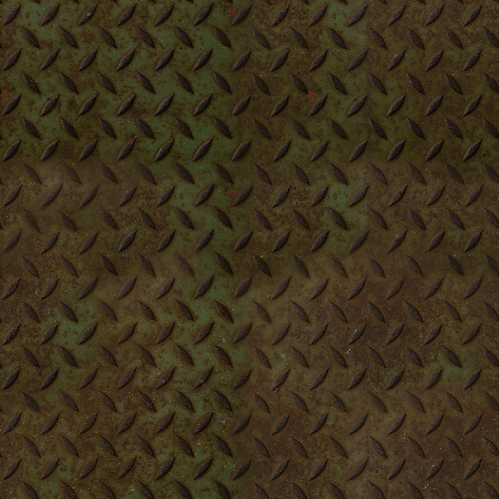
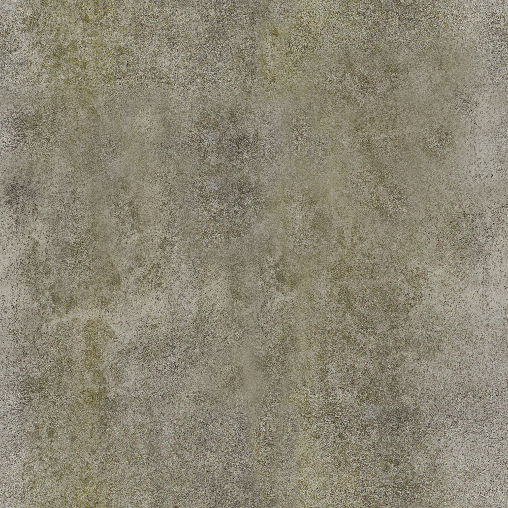

材001 · 木地板纹理wood_floor_diff_2k.jpg2048×2048 · 2,983,667字节 · 原件未改Dimitrios Savva · CC0 1.0原始来源 · 授权依据
材002 · 织物色彩图fabric_pattern_07_col_1_2k.jpg2048×2048 · 2,650,991字节 · 原件未改Rob Tuytel · CC0 1.0原始来源 · 授权依据
材003 · 旧金属板纹理metal_plate_diff_2k.jpg2048×2048 · 2,670,774字节 · 原件未改Rob Tuytel · CC0 1.0原始来源 · 授权依据
材004 · 灰泥墙面纹理grey_plaster_diff_2k.jpg2048×2048 · 3,216,521字节 · 原件未改Rob Tuytel · CC0 1.0原始来源 · 授权依据